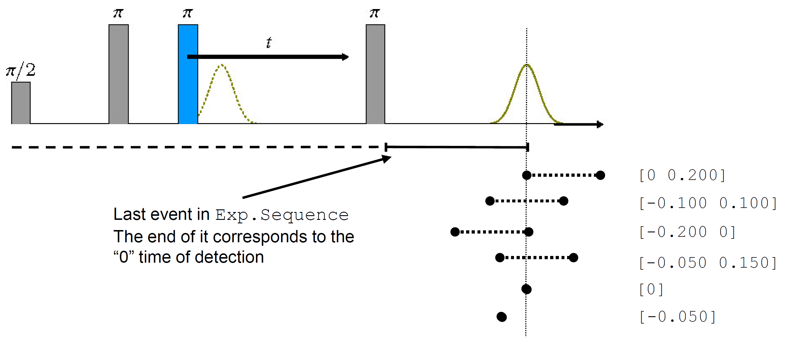

- EasySpin
- Documentation
- Publications
- Website
- Academy
- Forum
Simulation of pulse EPR and ENDOR signals and spectra, and of spin dynamics during pulse sequences.
saffron(Sys,Exp) saffron(Sys,Exp,Opt) y = saffron(...) [x,y] = saffron(...) [x,y,info] = saffron(...)
See also the examples and part I and part II of the saffron user guide.
saffron simulates pulse EPR experiments (ESEEM, HYSCORE, ENDOR, echoes, and more) for powders, single crystals and single spin systems. It takes three inputs:
Sys: the spin systemExp: the experiment: magnetic field, microwave frequency, pulse sequence, incrementation scheme (indirect dimensions), detectionOpt: simulation options (optional)
It returns the axes in x, the simulated signal in y, and further information in info (see outputs). Without outputs, saffron plots the result.
saffron has two simulation methods (engines). It chooses the fast manifold method whenever this is exact for the requested experiment, and the general but slower full method otherwise. See simulation methods for what each supports. You don't have to select a method yourself.
The following sections show the main ways to use saffron, from simple to advanced. The complete list of input fields follows after them.
The quickest way to simulate a standard experiment is to give its name in Exp.Sequence, together with its delays and number of points:
Sys.Nucs = '1H'; Sys.A = [2 6]; % MHz Exp.Field = 350; % mT Exp.Sequence = '3pESEEM'; Exp.tau = 0.136; % µs Exp.T = 0.05; % µs Exp.dt = 0.016; % µs Exp.nPoints = 256; saffron(Sys,Exp);
The predefined experiments are '2pESEEM', '3pESEEM', '4pESEEM', 'HYSCORE', 'MimsENDOR' and 'DaviesENDOR'. Their parameters (tau, T, t1, t2, dt, nPoints, tp, tprf, and the RF range rfFreq for ENDOR) are listed on the page on predefined experiments. By default, the microwave pulses are ideal. To give them a length, set Exp.tp (in µs). 'DaviesENDOR' needs selective pulses, so Exp.tp is required for it. The pulses are along x, and the detection phase is chosen so that the echo is real and positive: -π/2 for '2pESEEM' and '3pESEEM', and +π/2 for '4pESEEM' and 'HYSCORE'.
If no orientation selection is needed, the g tensor and Exp.mwFreq can be omitted: all orientations are then excited equally. To include orientation selection by finite pulses, give Sys.g, Exp.mwFreq and Exp.tp.
For any other experiment, give the pulse sequence and the incrementation scheme. The pulse sequence goes into Exp.Sequence, as a cell array of pulses (structures) and delays (in µs). Delays go from the end of one pulse to the start of the next. The incrementation scheme gives the number of points (Exp.nPoints) and the delays and pulse parameters that change from point to point (Exp.Dim1, Exp.Dim2, ..., see indirect dimensions). Without an incrementation scheme, saffron simulates the sequence once.
p90.Flip = pi/2; % flip angle, rad
p90.tp = 0.016; % pulse length, µs
p180.Flip = pi;
p180.tp = 0.032;
Exp.Field = 350; % mT
Exp.mwFreq = 9.8; % GHz
Exp.Sequence = {p90 0.2 p180 0.2};
Exp.nPoints = 100;
Exp.Dim1 = {'d1,d2' 0.01}; % increment both delays by 10 ns per point
[x,y] = saffron(Sys,Exp);
A pulse without length (tp absent or 0) is ideal: it rotates all spins instantly by the flip angle. Pulses with a length can be rectangular or shaped, e.g. frequency-swept (chirp) pulses. All pulse shapes of pulse are available. The most important pulse fields are:
Flip: flip angle, in radians. Alternatively, give Amplitude: the nutation frequency ν1 in MHz, which sets the pulse Hamiltonian ν1Ŝx.tp: pulse length, in µs.Phase: pulse phase, in radians. Phase = 0 is along x.Type: pulse shape, e.g. 'rectangular' (default), 'gaussian', 'quartersin/linear' or 'sech/tanh', with their parameters as in pulse.Frequency: frequency offset from the carrier (Exp.mwFreq or Exp.rfFreq), in MHz, or [start end] for a frequency sweep. Without a carrier, it is the absolute frequency (see pulse frequencies and carriers).IQ and t: a user-defined waveform and its time axis (needs Opt.IntTimeStep). The waveform is complex, like the waveforms of pulse; a phase step in Exp.PhaseCycle multiplies it by eiφ.Channel: 'mw' (default) or 'rf' for radiofrequency pulses (see Exp.rfFreq).
Electron spins with S > 1/2. With several EPR transitions, a flip angle has no unique meaning: each transition nutates at its own frequency. For example, with ν1 = Amplitude, at high field a transition between levels m and m−1 nutates at √(S(S+1)−m(m−1))·ν1: √2ν1 for both transitions of S = 1, and 2ν1 for the central and √3ν1 for the outer transitions of S = 3/2. Therefore, for spin systems with an electron spin S > 1/2, microwave pulses need tp and Amplitude. Flip, Qcrit, ideal pulses, increments of flip angles, Opt.IdealPulses and predefined experiments are not available. To build the explicit sequence of a predefined experiment, run it for an S = 1/2 system and use info.Exp as a template.
Pulse frequencies and carriers. Microwave and RF pulses follow the same rule. Each channel has a carrier: Exp.mwFreq (in GHz) for microwave pulses and Exp.rfFreq (in MHz) for RF pulses. The frequency of a pulse is the carrier plus Pulse.Frequency (in MHz). Without a carrier, Pulse.Frequency is the absolute frequency of the pulse.
The carrier runs continuously through the whole sequence, as in a spectrometer. The phase of a pulse (Pulse.Phase, plus its phase in Exp.PhaseCycle) is relative to this carrier, while the frequency offset and the frequency sweep of a pulse start at the beginning of that pulse. As a result:
By default, the RF carrier has a random phase in each shot, the same for all RF pulses of the shot, and the signal is averaged over it (see Exp.rfPhaseLocked).
For RF pulses, this covers the common ways in which spectrometers generate them:
Exp.rfFreq, and the offsets of the pulses in Pulse.Frequency.Exp.rfFreq, and no Pulse.Frequency (offset 0). For ENDOR, sweep 'rfFreq'.Exp.rfFreq, and the absolute frequency in Pulse.Frequency.
By default, a single point is detected at the end of the sequence. Use Exp.DetWindow to detect a transient, e.g. an echo or an FID, or the signal during the whole sequence, and Exp.DetOperator to detect other quantities than the electron coherence.
A predefined experiment is a shortcut for a user-defined experiment: a pulse sequence (Exp.Sequence) with its incrementation scheme (Exp.nPoints, Exp.Dim1, ...), coherence pathways and detection phase. saffron returns this user-defined experiment in info.Exp. Use it as a starting point when you want to change details that the predefined experiment does not offer, e.g. pulse shapes or individual pulse lengths:
Exp.Sequence = 'HYSCORE';
Exp.tau = 0.136; Exp.dt = 0.016; Exp.nPoints = [128 128];
[~,~,info] = saffron(Sys,Exp);
ExpCustom = rmfield(info.Exp,'predefinedExp');
ExpCustom.Sequence{5}.tp = 0.024; % length of the inversion pulse, µs
[x,y] = saffron(Sys,ExpCustom);
The page on predefined experiments lists the equivalent user-defined experiment of each of them.
To follow the spin dynamics of a single spin system, for example during a pulse, simulate one orientation with the molecular frame aligned with the lab frame, detect during the whole sequence, and detect the quantities you are interested in:
Sys.S = 1/2;
Chirp.Type = 'quartersin/linear';
Chirp.tp = 0.2; % µs
Chirp.trise = 0.015; % µs
Chirp.Frequency = [-100 100]; % MHz
Chirp.Flip = pi;
Exp.Field = mhz2mt(9500); % mT, on resonance for g = gfree
Exp.mwFreq = 9.5; % GHz
Exp.MolFrame = [0 0 0]; % single orientation
Exp.Sequence = {Chirp};
Exp.DetWindow = 'sequence'; % detect during the whole sequence
Exp.DetOperator = {'x1','y1','z1'}; % Bloch vector
[t,y] = saffron(Sys,Exp);
plot(t,real(y));
See the examples for more, e.g. adiabatic passage, Rabi oscillations, relaxation, resonator effects and selective excitation.
Sys is a spin system structure with the parameters of the spin Hamiltonian. The manifold method needs one electron spin. The full method supports any number of electrons and nuclei. Both support systems without nuclei.
Line widths used by other simulation functions (lw, lwpp, etc.) are ignored. Strains (StrainPars) are not supported and give an error. The following broadenings are supported:
lwAnisoGlwEndor[Gaussian Lorentzian], or a single number for a Gaussian. The broadening is applied along every indirect dimension that sweeps an RF frequency, i.e. the RF carrier frequency ('rfFreq') or the frequency of an RF pulse (e.g. 'p3.Frequency', an offset from Exp.rfFreq or an absolute frequency), for predefined and user-defined experiments. The RF frequencies must be equally spaced. The ends of the RF range are kept unchanged, as the echo without RF pulse, so the RF range should extend beyond the ENDOR lines by a few line widths. See line width parameters.
Relaxation times and the initial and equilibrium states:
T1saffron uses the full method.
Transitions with a relaxation time of 0 do not relax.
T2saffron uses the full method.
Transitions with a relaxation time of 0 do not relax.
If T1 or T2 is given and nonzero, relaxation is on, unless switched off with Opt.Relaxation.
The manifold method does not include relaxation in the spin dynamics. Instead, it multiplies the simulated signal with exponential decays: with T2 over the time the electron spin is in a coherence, and with T1 over the time it is in a population state. This is done for ESEEM and HYSCORE experiments, predefined or user-defined. For ENDOR experiments, relaxation has no effect in the manifold method.
initState
initState cannot be combined with relaxation (T1, T2). The manifold method supports states of the electron spin only (with equal populations of all nuclear sublevels) in powders. For each EPR transition, it uses the populations of its two levels. In the 'eigen' basis, the levels are assigned without the hyperfine couplings. States that also involve the nuclei, and crystals, need the full method, which saffron then uses.
A state given in the molecular frame (e.g. 'xyz' populations or a density matrix) is rotated into the lab frame for each orientation. For powders, coherences between states with different total electron spin projection along the field are removed from the initial state, since they average out over all rotations of the molecule around the magnetic field.
Sys.S = 1;
Sys.D = [1000 100]; % MHz
Sys.initState = {[0.5 0.3 0.2],'xyz'}; % zero-field populations px, py, pz
eqState
Exp contains the experimental parameters, most importantly the magnetic field and the pulse sequence.
FieldmwFreq
Microwave carrier frequency in GHz, optional. All frequencies in the definition of microwave pulses (Pulse.Frequency) are defined relative to Exp.mwFreq (see pulse frequencies and carriers):
Exp.mwFreq = 33.5; Pulse.Frequency = [-250 250]; % corresponds to 33.25 - 33.75 GHz
Exp.mwFreq is needed for orientation selection by finite pulses and for a resonator. Without it:
Pulse.Frequency (or with Pulse.Frequency = 0) are on resonance with every orientation (no orientation selection). This is how predefined experiments are usually simulated. It does not apply when the experiment needs the full method, e.g. for several electron spins (see simulation methods).Exp.DetFreq) defaults to the lab frame. Every finite pulse then needs a nonzero Pulse.Frequency. A nonzero pulse frequency always selects the full method.Pulse.Frequency = 9.5e3 + [-50 50]; % chirp from 9.45 to 9.55 GHz, no Exp.mwFreq
Sequence
The pulse sequence, as a cell array of pulses (structures, see above) and delays (in µs). Alternatively, the name of a predefined experiment ('2pESEEM', '3pESEEM', '4pESEEM', 'HYSCORE', 'MimsENDOR', 'DaviesENDOR'), which sets both the pulse sequence and its incrementation scheme.
Pulse1.Type = 'rectangular'; % pulse shape
Pulse1.tp = 0.032; % pulse length, µs
Pulse1.Flip = pi/2; % flip angle, rad
Pulse2 = Pulse1;
Pulse2.Flip = pi;
Exp.Sequence = {Pulse1 0.2 Pulse2 0.1};
Ideal pulses (zero length, infinite excitation bandwidth) are defined by giving only a flip angle:
Pulse1.Flip = pi/2;
Pulse2.Flip = pi;
Exp.Sequence = {Pulse1 0.2 Pulse2 0.4};
rfFreqPulse.Channel = 'rf'). The frequencies of RF pulses (Pulse.Frequency) are defined relative to Exp.rfFreq. Without it, they are absolute (see pulse frequencies and carriers). RF pulses need a length (tp) and a strength, given by B2 or Flip (see below). To sweep the RF frequency (ENDOR), use an indirect dimension over 'rfFreq', or over the frequency of the RF pulse:
RF.Channel = 'rf';
RF.tp = 20; % µs
RF.Flip = pi;
Exp.rfFreq = 10; % MHz
Exp.Sequence = {p90 0.2 p90 1 RF 1 p90 0.2};
Exp.nPoints = 201;
Exp.Dim1 = {'rfFreq' 0.05}; % RF sweep from 10 MHz in steps of 50 kHz
The same sweep, without carrier, with the absolute frequency of the RF pulse (the third pulse). Exp.rfFreq must not be given, since RF.Frequency would then be an offset from it:
Exp = rmfield(Exp,'rfFreq'); % no carrier
RF.Frequency = 10; % MHz
Exp.Sequence = {p90 0.2 p90 1 RF 1 p90 0.2};
Exp.nPoints = 201;
Exp.Dim1 = {'p3.Frequency' 0.05};
For the predefined ENDOR experiments, Exp.rfFreq = [min max] gives the RF range.
Strength of the RF field. B2 is the RF field amplitude in mT (B1 denotes the microwave field). The RF field oscillates as 2·B2·cos(2πνt), so B2 is half of its peak value. As usual in NMR, it is the part of the field that rotates with the nuclear spins: a bare nucleus with the gyromagnetic ratio γ (in MHz/mT) nutates at γ·B2. Instead of B2, you can give a flip angle Flip. It refers to the first magnetic nucleus in Sys.Nucs (its most abundant isotope, scaled by Sys.gnscale), without any electron spin: saffron sets B2 so that this bare nucleus turns by Flip. All nuclei then feel the same RF field. How fast each nuclear transition is driven follows from this field, the orientation of the nucleus, and, by default, the hyperfine enhancement (see Opt.rfEnhancement).
Direction of the RF field. The RF field is linearly polarized, perpendicular to the static field. In crystals, it is along the y axis of the lab frame, perpendicular to the microwave field (along x). In powders, saffron averages the signal over all directions of the RF field in the plane perpendicular to the static field, as the rotation of the molecules about the field requires. info.nRFDirections gives the number of directions used.
rfPhaseLockedtrue or false (default). Whether the RF carrier has the same phase in every shot of the experiment. In most ENDOR spectrometers, the RF source runs independently of the pulse timing, so its phase is different in each shot. With false, saffron averages the signal over this random phase. All RF pulses of a shot share the phase, so their phases relative to each other (Pulse.Phase, Exp.PhaseCycle) still matter. With true, the RF carrier starts with the same phase in every shot, as for the microwave carrier. The phase of the RF field then matters when the microwave pulses create nuclear coherences, e.g. in a single orientation.
nPointsA vector that contains the number of points in each dimension, e.g. [10 150] corresponds to 10 points in the first and 150 points in the second dimension.
Exp.nPoints = [10 150]; % 10 points along the first indirect dimension, 150 along the second
If omitted for predefined experiments, default values are assumed, see predefined experiments.
Dim1, Dim2,...
Dim1, Dim2,... provide the fields that are to be changed along the indirect dimensions (field nPoints).
The first data point always uses the values defined initially in the experiment definition.
All fields that appear in the pulse definition can be changed, e.g.:
Exp.Dim1 = {'p2.Flip' pi/8}; % increments the flip angle of the second pulse by pi/8 each step
For delays only the length can be changed:
Exp.Dim1 = {'d3' -0.1}; % decrements the length of the third delay by 100 ns each step
Several parameters can be changed in one dimension:
Exp.Dim1 = {'p2.Flip' pi/8; 'd3' -0.1}; % changes flip angle of pulse and duration of delay
Exp.Dim1 = {'p2.Flip,p3.Flip' pi/8}; % flip angles of 2nd and 3rd pulse are simultaneously stepped
For experiments that involve one or several moving pulses, the identifier Position can be used.
This is only possible for pulses that are not the first or last event in the sequence.
Pulses are allowed to cross, but must not overlap.
Exp.Dim2 = {'p2.Position' 0.1}; % moves the second pulse 100 ns back each step in the 2nd dimension
A list of increments can be used by providing vectors with the precomputed increments.
All increments are always applied to the initial value of the field (as defined in the Exp) and are not related to each other.
Hence, if the value in the experiment definition is desired as first data point of the indirect dimension, the first element has to be zero:
Exp.nPoints = 4;
% this
Exp.Dim1 = {'d2' [0 0.1 0.2 0.3]};
% is equal to:
Exp.Dim1 = {'d2' 0.1};
Complete freedom is given when it comes to providing the list of increments.
Exp.nPoints = 5;
Exp.Dim1 = {'d2' [0 0.1 0.3 0.65 -0.2]}; % increment of the second delay
However, the program checks that changing lengths of events do not lead to overlapping pulses at any acquisition point. With a detection window, the detected events must keep their length: to vary the length of a detected event, run one simulation per point.
A special case is the field Frequency in the pulse definition of a frequency-swept or of a monochromatic pulse that is defined by identical initial and final frequency.
If one value is provided in Exp.DimX, this is going to be added to both elements in the Frequency field - the pulse is moved in the frequency domain:
Exp.Dim1 = {'p1.Frequency' 5}; % changes both elements in Frequency by 5 MHz per step
An equivalent input as the above is the following, where the increment for each element of Frequency is given:
Exp.Dim1 = {'p1.Frequency' [5 5]}; % changes both elements in Frequency by 5 MHz per step
This syntax can also be used to change the sweep width:
Exp.Dim1 = {'p1.Frequency' [-5 5]}; % increases sweep width by 10 MHz each step
Exp.Dim1 = {'p1.Frequency' [0 5]}; % increment only the final frequency of the frequency sweep
A list of increments can be provided as well, by using ';' as separator:
Exp.Dim1 = {'p1.Frequency' [0 0; 10 10; 30 30; 80 80]}; % vector increment for shifting the frequency range of the pulse
Exp.Dim1 = {'p1.Frequency' [0 0; -10 0; 0 30; -80 80]}; % vector increment changing the excitation range of the pulse
For other pulse parameters that are defined by a vector (e.g., the order of an asymmetric hyperbolic secant (HS) pulse Pulse.n or the list of relative amplitudes of a Gaussian cascade Pulse.A0), selected elements can be incremented by adding an index to the field name:
Exp.Dim1 = {'p1.A0(3)' 0.1; 'p1.A0(4)' -0.1}; % changes relative amplitudes of the third and fourth pulse in a Gaussian cascade
Exp.Dim1 = {'p1.n(2)' 2}; % increases order of the falling flank of a hyperbolic secant pulse by 2 each step
% Also possible for 'Frequency'
Exp.Dim1 = {'p1.Frequency(2)' 5}; % changes only the final frequency of the pulse
Exp.Dim1 = {'p1.Frequency' [0 5]}; % identical to the above and not a list of increments!
For user-defined waveforms, give one waveform per point in Pulse.IQ and Pulse.t (cell arrays), and [] as increment:
Pulse.IQ = {IQ1 IQ2};
Pulse.t = {t1 t2};
Exp.nPoints = 2;
Exp.Dim1 = {'p1.IQ' []};
Pulse phases can be stepped along an indirect dimension, too. The output then contains the signal of each step. To combine the steps into a phase-cycled signal, use Exp.PhaseCycle instead.
Exp.nPoints = 4;
Exp.Dim1 = {'p2.Phase,p3.Phase' pi/4}; % changes the phase of the 2nd and 3rd pulse by pi/4 each step
Pathways+1, -1 or 0) and must end in -1, the detected coherence.
'all' (default): all pathways, as in an experiment without phase cycle.'echo': the pathways whose echo forms within the detection window (Exp.DetWindow) at all points of the experiment, or exactly at the detection point for single-point detection. Finite pulses shift echoes slightly, so with finite microwave pulses, echoes up to the total length of these pulses outside the window are also included. 'echo' cannot be used with Exp.DetWindow = 'sequence'.'+', '-', '0', 'c' for either +1 or -1, or '.' for any order; several pathways as rows of a character array.NaN for any order.Exp.Pathways = '+-'; % two-pulse echo Exp.Pathways = '+0-'; % stimulated echoWith
'echo', the echo position can be given in Exp.Sequence or in Exp.DetWindow. These two give the same stimulated echo, 100 ns after the third pulse:
Exp.Pathways = 'echo';
Exp.Sequence = {p90 0.1 p90 0.5 p90 0.1}; % detect at the end of the sequence
Exp.Sequence = {p90 0.1 p90 0.5 p90}; % or: detect 100 ns after the last pulse
Exp.DetWindow = 0.1;
saffron returns the pathways that contribute to the signal in info.Pathways, and the times at which they form echoes, after the end of the sequence, in info.EchoTimes. For example, a transient after the three pulses above contains four echoes:
Exp.Sequence = {p90 0.1 p90 0.5 p90};
Exp.DetWindow = [0 2]; % detect for 2 µs after the last pulse
Exp.Pathways = 'echo';
[t,y,info] = saffron(Sys,Exp);
info.Pathways % '+0-', '-+-', '0+-', '++-'
info.EchoTimes % 0.1, 0.4, 0.5, 0.6 µs
info.Pathways has the same form as Exp.Pathways, so it can be used as a starting point for an explicit selection, e.g. Exp.Pathways = info.Pathways(1,:) for the stimulated echo alone.
Predefined experiments set their pathways themselves, so Pathways cannot be used with them.
PhaseCycleExp.Sequence, in their order, followed by the receiver phase, all in radians. In each step, the pulse phases are added to the phases of the pulses (Pulse.Phase), and the signal is multiplied by e-iφ, where φ is the receiver phase, in the same way as by Exp.DetPhase. The result is the average of the signals of all steps.
% two pulses: first pulse along +x and -x, receiver phase 0 and pi
Exp.PhaseCycle = [0 0 0
pi 0 pi];
% two pulses: first pulse in four steps of 90 degrees, receiver phase following
ph = (0:3).'*pi/2;
Exp.PhaseCycle = [ph 0*ph -ph];
Any list of steps is possible, including steps in which several pulses change their phases together. A nested phase cycle, which runs through all combinations of the phase steps of the individual pulses, lists all these combinations. They can be generated with ndgrid:
% three pulses: first pulse in four steps of 90 degrees, % third pulse in two steps of 180 degrees [ph1,ph3] = ndgrid((0:3)*pi/2,[0 pi]); Exp.PhaseCycle = [ph1(:) 0*ph1(:) ph3(:) -ph1(:)-ph3(:)];With a detection window or
'sequence' (see DetWindow), the whole detected signal is phase-cycled, including the signal before and during the cycled pulses. Signal that is the same in all steps is removed if the receiver phases cancel it.
Both methods support phase cycles. The full method simulates a nested phase cycle about as fast as a single step. Other phase cycles are propagated step by step, which takes longer, but the steps share the pulse propagators.
Predefined experiments set their pathways themselves, so PhaseCycle cannot be used with them.
To remove all signal that does not depend on a pulse, as with a pulse switched on and off on a spectrometer, simulate the experiment a second time with the strength of that pulse set to zero (whichever of Flip, Amplitude or B2 the pulse uses), and subtract the two signals.
DetWindowDetWindow controls detection and is given in microseconds.
The zero-time of the detection is taken as the end of the last element in Exp.Sequence.
The default is 0, a single point at the end of the sequence. Single points, at the end of the sequence or shifted from it, work with both methods. Transients, and 'sequence' (see below), use the full method.

To do single-point detection, it is sufficient to tellDetWindow the time of the detection point.
E.g. to detect at the center of the echo of a two-pulse sequence:
tau = 0.5;
Exp.Sequence = {pulse90 tau pulse180 tau}; % two-pulse echo sequence
Exp.DetWindow = 0; % detect a single point at the end of the second delay (center of the echo)
The detection position can be set to anywhere at the end of the sequence, as long as it does not overlap with a pulse:
Exp.DetWindow = 0.2; % detect a single point 200 ns after the second delay Exp.DetWindow = -0.2; % detect a single point 200 ns before the end of the second delayIn order to detect a transient,
DetWindow has to be provided with a start and end value:
tau = 0.5;
Exp.Sequence = {pulse90 tau pulse180 tau}; % two-pulse echo sequence
Exp.DetWindow = [-0.1 0.1]; % detect from -100 ns to 100 ns around the end of tau
It is also possible to detect a transient anywhere after the last pulse, as long as it does not overlap with it:
Exp.DetWindow = [0 0.3]; % start detection at the end of the last event and detect for 300 ns Exp.DetWindow = [-0.3 -0.1]; % start detection 300 ns before the end of the last event and detect for 200 nsIf the sequence ends with a pulse, e.g. to detect an FID, or for a three-pulse ESEEM experiment where the delay after the last pulse stays constant, the detection time is counted from the end of that pulse:
Exp.Sequence = {pulse90 0.5 pulse90 0.8 pulse90}; % three-pulse sequence (the last element is a pulse)
Exp.DetWindow = 0.5; % detect a single point 500 ns after the last pi/2 pulse (center of echo)
Exp.DetWindow = [0.250 0.750]; % detect a transient, centered around the echo
Exp.DetWindow = [0 0.100]; % detect an FID after the last pulse
To detect during the whole sequence, including the pulses, use
Exp.DetWindow = 'sequence'; % detect everything, time axis from the start of the sequence
With the full method, info.EventTimes gives the start and end time of each element of Exp.Sequence (one row per element, in microseconds), on the same time axis as the transient: from the start of the sequence for 'sequence', and from the end of the sequence for detection windows. It includes the effect of resonator ringing and of moved pulses (Position). With indirect dimensions, the times are those of the first point.
To detect only some events of a sequence, use these settings:
Exp.DetWindow = [0 d] with the delay d.Exp.DetWindow = 'sequence'. Later events don't affect earlier signals, so this is exact, unless a later pulse has a phase cycle.Exp.DetWindow = 'sequence', and select the time points with info.EventTimes:
[t,S,info] = saffron(Sys,Exp); k = 3; % third element of Exp.Sequence idx = t >= info.EventTimes(k,1) & t <= info.EventTimes(k,2); plot(t(idx),real(S(idx)));
DetOperatorsaffron detects Ŝ+ of all electron spins: the real part of the signal corresponds to Ŝx and the imaginary part to Ŝy, in the detection frame (Exp.DetFreq).
Give other operators in the syntax of sop, or as matrices, in a cell array; a single operator can also be given without the cell array:
Exp.DetOperator = {'+1','z1'}; % S+ and Sz of the first electron spin
Exp.DetOperator = {'x1','y1','z1'}; % Bloch vector
Exp.DetOperator = {[0 1; 0 0] [1/2 0; 0 -1/2]}; % S+ and Sz for S = 1/2, as matrices
Exp.DetOperator = 'z1'; % same as {'z1'}
The signal of an operator is its expectation value, divided by the squared norm of the operator. For example, Sz of an electron spin starts at -1 in thermal equilibrium. Signals of Hermitian operators such as Ŝx are real. With several operators, the signal has one column (last dimension) per operator.
DetFreqDetFreq about the static field, like the signal after down-conversion with a reference oscillator at DetFreq in a spectrometer.
The default is Exp.mwFreq, so that the signal oscillates only at the frequency offsets of the spins. Without Exp.mwFreq, the default is 0 (lab frame); giving DetFreq without Exp.mwFreq needs the full method.
Exp.DetFreq = 33.5; % detection frame at 33.5 GHzThe reference oscillator runs continuously from the start of the sequence. Relative to detection at
Exp.mwFreq, the electron coherence signal is multiplied by e-2πi(DetFreq-mwFreq)t, with t the time from the start of the sequence to the detection point. Along an indirect dimension that changes the length of the sequence, this shifts the signal in frequency.
DetPhaseDetPhase.
The default value is 0. It cannot be used with predefined experiments.
With several detection operators (Exp.DetOperator), give one phase per operator, or a single value that applies to all of them. Operators without electron coherence, such as Ŝz, are not affected by it.
Exp.DetOperator = {'+1','z1'};
Exp.DetPhase = [pi/2 0]; % phase for S+, none needed for Sz
DetIntegratefalse (default) or true (full method). If true, saffron returns the integral of the signal over the detection window (in signal units times µs) instead of the transient, as in an integrated echo.
DetTimeStepDetWindow), in microseconds, optional.
The signal is computed directly at these time points, so a larger step makes the simulation faster without making it less accurate.
If the length of the detection window is not a multiple of DetTimeStep, the step is shortened slightly, so that the points are evenly spaced and the last point falls on the end of the window.
If DetTimeStep is not given, it is set to about a quarter of the period of the highest pulse frequency in the simulation frame (a multiple of Opt.IntTimeStep).
If both are given, DetTimeStep must be a multiple of Opt.IntTimeStep.
By default, saffron simulates a powder (frozen solution). It simulates a single crystal if Exp.CrystalSymmetry or Exp.MolFrame is given, exactly as pepper and the other simulation functions do (see the guide on crystal simulations). The signal is averaged over all orientations of a powder, and over all sample orientations and symmetry-related sites of a crystal. For S=1/2 without nuclear modulation and with ideal pulses that excite all spins, the two-pulse echo is 1/2, and the stimulated and four-pulse echoes are 1/4.
To simulate a single spin system with its molecular frame aligned with the lab frame (all tensor frames then refer directly to the lab frame), use a crystal with one site in the default orientation:
Exp.MolFrame = [0 0 0]; % single orientation: molecular frame = crystal frame = lab frame
Note that Exp.SampleFrame alone does not give a single orientation: without CrystalSymmetry or MolFrame, the sample is a powder, and SampleFrame is ignored.
SampleFrame
An Nx3 array that specifies the sample orientations for which the EPR spectrum should be computed. Each row of SampleFrame contains the three Euler rotation angles that transform the lab frame to the sample/crystal frame. The default is [0 0 0].
Exp.SampleFrame = [0 0 0]; % sample/crystal frame aligned with lab frame Exp.SampleFrame = [0 pi/2 0]; % sample/crystal frame tilted relative to lab frame Exp.SampleFrame = [0 pi/2 pi/4]; % sample/crystal frame tilted relative to lab frame Exp.SampleFrame = [0 0 0; 0 pi/2 pi/4]; % two samples/crystals
SampleFrame is only used for crystals. It is ignored for powders.
MolFrame
The three Euler angles, in radians, for the transformation of the sample/crystal frame to the molecular frame. Use this field when specifying a crystal containing spin systems that are tilted with respect to the crystal frame. E.g. Exp.MolFrame = [0 pi/4 0] tilts the x and z axes of the spin system's molecular frame relative to those of the crystal frame while keeping the y axes aligned. If CrystalSymmetry is given and MolFrame is not, the default is [0 0 0].
CrystalSymmetrySpecifies the symmetry of the crystal. You can give either the number of the space group (between 1 and 230), the symbol of the space group, or the symbol for the point group of the space group (in either Schönflies or Hermann-Mauguin notation).
Exp.CrystalSymmetry = 'P21/c'; % space group symbol Exp.CrystalSymmetry = 11; % space group number (between 1 and 230) Exp.CrystalSymmetry = 'C2h'; % point group, Schönflies notation Exp.CrystalSymmetry = '2/m'; % point group, Hermann-Mauguin notation
When CrystalSymmetry is given, all symmetry-related sites in the crystal are included in the calculation. If CrystalSymmetry is not given for a crystal (MolFrame given), space group 1 (P1, point group C1, one site per unit cell) is assumed. To include only some of the sites, use Opt.Sites.
SampleRotation
Specifies the sample rotation as {nRot_L,rho}, as for pepper. nRot_L is the rotation axis, fixed in the laboratory frame, and rho is the rotation angle (in radians), or a list of angles. The rotation is applied to the sample starting from the orientation given in Exp.SampleFrame. Several angles are averaged, like several sample orientations. SampleRotation is only used for crystals; for powders, a single rotation is ignored and several angles give an error.
These fields are used by the full method.
mwPolarization'linear' or 'circular', default is 'linear'.
If mwPolarization is 'circular', the excitation operator also uses the imaginary part of the waveform.
The excitation then becomes real(IQ) Ŝx + imag(IQ) Ŝy.
Exp.mwPolarization = 'circular'; % circular polarization for all pulses
In a shifted simulation frame, only the part of the field that rotates with the spins is kept (see Opt.SimFreq). Linear and circular polarization then give the same result, and the polarization matters only in the lab frame (Opt.SimFreq = 0).
In the lab frame, 'circular' does not allow saffron to use some of its speed-up tricks and can lead to significantly longer simulation times.
Bandwidth limiting effects of a resonator on the pulses can be included in two ways: with the resonator center frequency ResonatorFrequency and the loaded Q-value ResonatorQL, from which the frequency response is computed (transfer function of an RLC series circuit),
Exp.ResonatorFrequency = 33.5; % resonator center frequency in GHz Exp.ResonatorQL = 300; % loaded Q-value
or with the transfer function and its frequency axis in FrequencyResponse:
Exp.FrequencyResponse = [Frequency; TransferFunction] % transfer function and its frequency axis
By setting ResonatorMode it is possible to compensate for the resonator.
Compensation aims to provide a waveform that excites spin packets in the resonator with constant critical adiabaticity if the originally specified waveform would lead to excitation with constant critical adiabaticity in the absence of a resonator (mainly for chirp and hyperbolic secant pulses).
For more details, see pulse and resonator. A resonator needs Exp.mwFreq.
ResonatorFrequencyResonatorQLFrequencyResponseExp.FrequencyResponse = [Frequency; TransferFunction] with the (possibly experimental) resonator transfer function in TransferFunction and the corresponding frequency axis in Frequency (in GHz).
A complex transfer function input in Exp.FrequencyResponse is used directly in the bandwidth compensation.
A real transfer function input is assumed to correspond to the magnitude response, and the associated phase response is estimated.
If FrequencyResponse is given, the alternative input fields ResonatorFrequency and ResonatorQL are ignored.
ResonatorMode'simulate' or 'compensate'.
By default, the effect of the resonator on the signal is simulated.
If set to 'compensate', the pulse shape is adapted such that it compensates for the resonator profile by using a uniform critical adiabaticity criterion.
Opt contains additional simulation parameters. All of them are optional.
Method
'auto' (default), 'manifold', 'full''manifold' is fast: it treats the electron spin as a two-level system and computes the nuclear spin dynamics separately within each of its two levels (electron spin manifolds). 'full' is slower but general: it follows the state of the complete spin system step by step in time.
With 'auto', saffron uses 'manifold' whenever it supports all requested features exactly, and 'full' otherwise. If you request 'manifold' but the experiment needs 'full' (e.g. shaped microwave pulses, Sys.initState in crystals, or transition-specific relaxation times), saffron gives an error that names the feature. The method used, and why, is returned in info.Method and info.MethodReason. See simulation methods.
RelaxationExp.Sequence:
Opt.Relaxation = true; % relaxation during the whole sequence Opt.Relaxation = [0 0 1]; % relaxation only during the third element of the sequenceIf not given, relaxation is on if
Sys.T1 or Sys.T2 is nonzero. A vector needs one entry per element of Exp.Sequence. The manifold method has no relaxation during pulses, so there the entries for pulses have no effect. With both methods, the free evolution up to and during detection (Exp.DetWindow) takes the setting of the last delay of the sequence.
rfEnhancementtrue (default) or false. Whether RF pulses include the hyperfine enhancement. The RF field acts on a nucleus directly, through its nuclear Zeeman interaction. It also tilts the electron spin slightly, and through the hyperfine coupling this changes the field the nucleus feels. This second effect, the hyperfine enhancement, makes the RF pulse stronger for the nuclear transitions in one electron spin manifold and weaker in the other. It is important when the hyperfine coupling is comparable to the nuclear Zeeman frequency, and it causes intensity differences between the two lines of a nucleus in ENDOR spectra. With true, saffron includes it, to first order in the hyperfine coupling divided by the electron Zeeman frequency; in the lab frame of the full method (Opt.SimFreq = 0), the RF field acts on the electron spin directly, which includes it exactly. In other simulation frames, one smaller effect of the RF field on the electron spin is left out: with an anisotropic g, the RF field slightly modulates the EPR frequencies. This only matters for electron coherences during RF pulses, not for ENDOR experiments with the RF pulse between the microwave pulses that store and recall the polarization (Mims, Davies). With false, the RF field acts only through the nuclear Zeeman interaction.
GridSizeGridSize gives the number of orientations on a quarter of a meridian, i.e. between θ = 0 and θ = 90°. The default value is 31, corresponding to a 3° spacing between orientations. For highly anisotropic spectra, esp. for HYSCORE, the value often has to be increased to 181 (0.5° spacing) or beyond.
GridSymmetry, GridFrame
Grids that cover only part of the sphere assume that opposite field directions in the molecule give the same signal. This does not hold with nuclear quadrupole couplings (Sys.Q), nuclear-nuclear couplings (Sys.nn), or initial states (Sys.initState) that change sign when the field is reversed, such as a polarization along a molecular axis. Then both methods also include the reversed field directions. With the full method, this doubles the simulation time with Sys.Q, Sys.nn, or initial states that involve nuclear spins. With S > 1/2 or several electron spins, opposite field directions also differ slightly when nuclei are present (about 10−5 of the modulation depth), and this difference is neglected.
Sites
In crystal simulations, this gives a list of crystal sites to include in the simulation. If Opt.Sites is empty or not given, all sites are included. If given, it must be a list of site numbers. The number of sites depends on the space group given in Exp.CrystalSymmetry. E.g., the following limits the simulation to sites 1 and 3 of the 4 magnetically distinct sites in a crystal of space group no. 47.
Exp.CrystalSymmetry = 47; % space group Pmmm Opt.Sites = [1 3];
In powder simulations, Opt.Sites is ignored.
separate
'' (default), 'components'
Determines whether to return the total signal or the signals of the components. If set to '', the total signal is returned. If set to 'components', y is a matrix with the signals of all components (including isotopologues). Each row in y is one signal.
Windowinfo.fd, default 'ham+'. See apowin for details.
ZeroFillFactorZeroFillFactor=4, a 256-point array is padded to 1024 points.
The following options are only used by the manifold method:
IdealPulsesfalse (default) or true. If true, finite pulses are treated as ideal pulses, with orientation selection by an excitation window of width 1/tp. This is faster, but less accurate than the simulation of the finite pulses. Not available for electron spins S > 1/2.
OffsetToleranceSys.lwAnisoG), default 1e-6. It applies to finite pulses. With ideal pulses, the average is exact, except for binned signals (see Binning) that include coherence pathways that do not refocus at the detection point. saffron chooses the number of resonance offsets automatically, from the line width, the pulse lengths and the longest time a pathway spends with electron coherence that is not refocused, so that the error of the average is of the order of OffsetTolerance times the signal amplitude. A smaller value needs more offsets, but only a few more: going from 1e-3 to 1e-9 roughly doubles their number. info.nOffsets gives the number used. To check that a simulation has converged, run it again with a smaller value and compare.
OriThresholdNucleiSys.Nucs) whose modulations are simulated. By default, all nuclei are included.
Transitions[i j]. Electron spins with S > 1/2 are simulated with the manifold method only if requested (Opt.Method = 'manifold'), as an approximation that treats each transition separately.
ProductRuletrue or false). By default, it is not used. It needs ideal pulses and no RF pulses. The result is independent of this choice, up to small numerical differences.
Binning
'auto' (default), true, false, or one true/false per dimension
How the manifold method computes dimensions in which delays change by fixed steps (delays, or pulses moved with Position). With binning, it computes the frequencies and amplitudes of all the peaks of the signal and builds the signal from a histogram of the peaks (see Expand). This is fast for most experiments, since the effort does not depend on the number of points, but it is approximate. Without binning, it computes the signal point by point, with the delays fixed at each point. This is exact, but takes longer for many points.
With 'auto', signals with up to 64 points are computed point by point, and otherwise saffron uses whichever it estimates to be faster. The effort of binning grows steeply with the number of delays between pulses that change: e.g. for 2D-CP (four changing delays) and larger spin systems, point by point is faster. Binning is possible for at most two dimensions and at most four changing delays between pulses. info.binnedDims lists the binned dimensions.
Opt.Binning = false; % all dimensions point by point (exact) Opt.Binning = [true false]; % first dimension binned, second point by point
ExpandBinning), a non-negative integer. The signal is computed via a frequency-domain buffer that is 2Expand times longer than the signal along each binned dimension. The higher the factor, the more accurate the simulation, but the more memory and time it needs, especially for 2D simulations. Default values are 6 for one binned dimension and 2 for two.
The following options are only used by the full method:
SimFreqSimFreq is not provided, a suitable simulation frame is automatically selected.
The results are given in the detection frame (Exp.DetFreq), independent of the simulation frame.
No matter the choice of the simulation frame, all other frequencies must still be given in the lab frame - the program handles all required frequency shifts.
For example, for running a Q-band simulation without using the default simulation frame, but one that rotates at 30 GHz:
Exp.mwFreq = 34.4; % Set carrier frequency to 34.4 GHz Pulse.Frequency = [-50 50]; % Pulse with bandwidth of 100 MHz, sweeps from 34.35 to 34.45 GHz Opt.SimFreq = 30; % Changes into a rotating frame at 30 GHzTo force a simulation in the lab frame,
SimFreq has to be set to zero:
Opt.SimFreq = 0; % Propagation in the labframeChanging the simulation frame allows for using a larger time step, which in turn can strongly reduce computation time. Keep in mind that if a time step is provided with
Opt.IntTimeStep, it is not adapted automatically.
To have the program adapt the time step to the simulation frequency, remove the field Opt.IntTimeStep.
In a simulation frame other than the lab frame, the high-field approximation is used: the spin Hamiltonian keeps its exact energy levels, but the small mixing between electron spin states with different mS, caused e.g. by g anisotropy or zero-field splitting, is neglected. To include this mixing, simulate in the lab frame (Opt.SimFreq = 0).
In the same way, a pulse keeps only the part of its field that rotates with the electron spins (rotating-wave approximation). The counter-rotating part, which causes small effects such as the Bloch-Siegert shift, is neglected. The results then do not depend on the choice of SimFreq, as long as it is not zero.
RF pulses use the same approximation: each RF pulse is computed in a frame that rotates with the nuclear spins, and only the part of the RF field that rotates with them is kept. This makes long RF pulses fast, since the computation time no longer grows with the number of RF periods. The neglected part shifts the NMR transitions slightly (Bloch-Siegert shift). Relative to the ENDOR effect, the error is of the order of the RF nutation frequency divided by four times the RF frequency, e.g. about 10-3 for an RF π pulse of 10 µs on protons at X-band. saffron estimates this error for each RF pulse and orientation. Where it exceeds 1%, e.g. for strong RF pulses at low frequencies, the RF pulse is computed without this approximation, with at least 40 time steps per RF period. This is exact and takes longer. In the lab frame (Opt.SimFreq = 0), all RF pulses are computed in this way. With the hyperfine enhancement (Opt.rfEnhancement), the RF field there also acts on the electron spin, so the time steps of RF pulses must resolve the electron precession, as IntTimeStep does. This makes RF pulses in the lab frame much slower.
IntTimeStepUser-provided integration time steps must at least fulfill the Nyquist criterion, or an error is thrown. For integration time steps larger than the recommended ones, a warning is printed to the command line.
xExp.Dim1, Exp.Dim2, ... (e.g. the delay in µs), followed by the time axis of the detected transient (in µs). With a single axis, x is a vector, otherwise a cell array of vectors. The time axis of a detection window starts at the end of the sequence; that of 'sequence' at its start.
yinfoinfo.Exp: the experiment as simulated; for predefined experiments, the equivalent user-defined experiment (pulse sequence and incrementation scheme).info.Method, info.MethodReason: the simulation method used, and why the full method was needed.info.f, info.fd: the frequency axis (in MHz) and the spectrum obtained by Fourier transform of the signal along delay increments (ESEEM); for 2D (HYSCORE), info.f1, info.f2 and info.fd. For ENDOR, info.f is the RF axis and info.fd the spectrum.info.EventTimes: start and end times of the elements of Exp.Sequence (full method, see Exp.DetWindow).info.Pathways: the coherence transfer pathways that contribute to the signal, one row per pathway, in the form of Exp.Pathways (see there), sorted by echo time, with pathways without echo last. These are the selected pathways that the phase cycle and ideal pulses don't cancel, at the first point of the indirect dimensions. Empty if the spin system has several electron spins, or (full method) an electron spin with S > 1/2.info.EchoTimes: for each row of info.Pathways, the time (in µs) after the end of the sequence at which the pathway forms its echo, at the first point; negative values are before the end. NaN for pathways without echo (e.g. a free induction decay).info.nOffsets: the number of resonance offsets in the average over the inhomogeneous line (manifold method, see Opt.OffsetTolerance); 1 if no offsets are needed (no inhomogeneous line, or the exact average with ideal pulses).info.binnedDims: the dimensions computed by binning (manifold method, see Opt.Binning); the other dimensions are computed point by point.info.nRFDirections: the number of RF field directions in the average over the RF field direction in powders (see Exp.rfFreq); the largest over the orientations in the full method. The number is doubled from 4 until the average has converged to 10-5 of the largest signal. 1 for crystals.
saffron chooses between two methods (Opt.Method = 'auto'). Both give the same signals where both apply. The manifold method is used whenever it supports all features of the experiment; otherwise, the full method is used.
| manifold (fast) | full (general) | |
|---|---|---|
| Spin system | one electron spin with S = 1/2, with or without nuclei (S > 1/2 only on request, approximately) | any number of electron spins and nuclei, any S, also without nuclei |
| Microwave pulses | ideal and rectangular | any shape: rectangular, shaped, frequency-swept, user-defined waveforms |
| RF pulses | one rectangular RF pulse, with a sweep of Exp.rfFreq or of the frequency of the RF pulse; no electron coherence during the RF pulse (select the pathways with Exp.Pathways); random RF phase; population transfer for each nuclear transition, which neglects the effect of the RF pulse on nuclear coherences created by the microwave pulses (small except for deep nuclear modulations); hyperfine enhancement (Opt.rfEnhancement) | yes; rotating-wave approximation for the RF field where it is accurate, otherwise time steps (see Opt.SimFreq); random or fixed RF phase (Exp.rfPhaseLocked); hyperfine enhancement (Opt.rfEnhancement) |
| Indirect dimensions | delays, moving pulses (Position), pulse flip angle, phase, length, frequency and amplitude, RF frequency; pulses must not cross | any field, also frequency bands and user-defined waveforms; pulses may cross |
| Pathways, phase cycles | yes | yes |
| Detection | single point (DetWindow a single number, or two equal numbers), Ŝ+, any detection frame (DetFreq) | also transients, 'sequence', other detection operators, echo integration |
| Relaxation | scalar T1, T2, as decays during the delays, per element of the sequence | scalar or matrix T1, T2, eqState, per element of the sequence |
Initial state (initState) | electron spin only, powders | yes |
| Resonator | no | yes |
Inhomogeneous line (lwAnisoG) | yes | no |
The manifold method uses matrix-based methods similar to those employed by Mims (1972) to compute the frequencies and amplitudes of all peaks for ESEEM and ENDOR. With these peaks, a spectrum histogram is constructed, from which the time-domain signal is obtained by inverse Fourier transform. Alternatively, it computes the signal point by point, with the delays fixed at each point (see Opt.Binning). For systems with several nuclei, it simulates without product rules by default. To generate the spectrum from the time-domain signal (info.fd), saffron performs (1) baseline correction, (2) apodization, (3) zero-filling, and (4) Fourier transform.
All the theory is described in:
Stefan Stoll, R. David BrittThe full method assumes a piecewise time-independent Hamiltonian, which allows solving the Liouville-von Neumann equation and propagating the state of the spin system step by step. Without relaxation, it works in Hilbert space. With relaxation, it works in Liouville space, which increases matrix sizes and slows down the computation, but includes relaxation directly in the propagation.
The method is based on the SPIDYAN software package, described in: